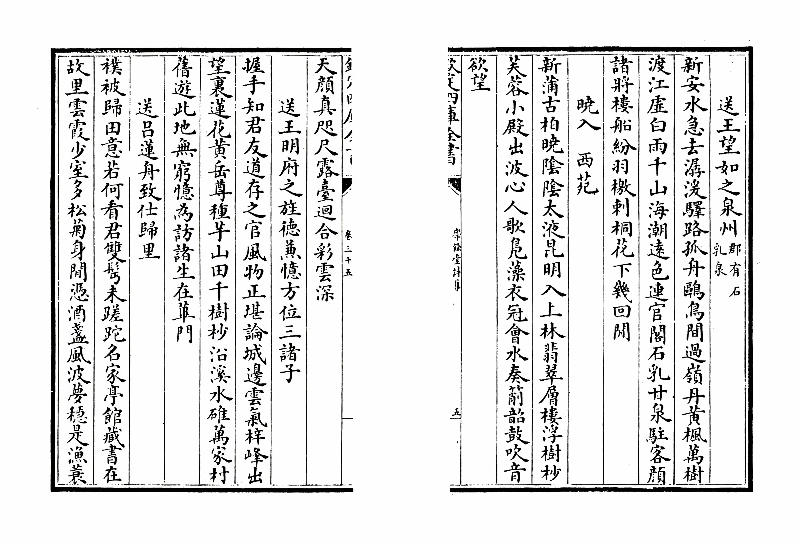

毛泽东曾对他的卫士长说：“我活着的时候你们不要写我，我死了之后你们可以写，写出我的真实。”P6
在我看来，毛泽东深谙自由之下才有真实，权力之下没有真相。选择与卫士长说出这句话则是因为毛泽东与他们相处的时间比亲人都久。所以也就有了他在日后对身边人说：“我和我的亲人见面不多，只有你们和我朝夕相处，形影不离。我的情况你们最了解。”
其中毛泽东口中的“他们”指的是曾经生活在毛泽东身边的封耀松、徐涛、尹荆山、韩桂馨、姚淑贤、李连成、王学文、田云玉八位同志。
注：中南海位于北京故宫西侧，与北海旧称“三海”，又名“西苑”“太液池”，有800亩土地700亩水域。始建于辽金，历经元、明、清各朝，是封建帝王的行宫和宴游之地。民国时这里曾设立过“总统府”“大元帅府”。中华人民共和国成立后，是中共中央和国务院的办公处所。
“翡翠层楼浮树林，芙蓉小殿出波心。”P7
此句应为：“翡翠层楼浮树杪，芙蓉小殿出波心”杪读作miǎo，义为：树梢。
{kind=link}
出自清初著名诗人施闰章的《晓入 西苑》，收录于《学余堂诗集》卷三十五、《皇清文頴》卷七十六。
诗句原文：新蒲古柏晓阴阴，太液昆明接上林。翡翠层楼浮树杪，芙蓉小殿出波心。人歌凫藻衣冠会，水奏箾韶鼓吹音。欲望天颜真咫尺，露台回合彩云深。
其中诗句中的箾，为多音字，读作：shuò、xiāo、qiào，在诗中按句义应读：xiāo，义同萧。
注：中南海位于北京故宫西侧，与北海旧称“三海”，又名“西苑”“太液池”，有800亩土地700亩水域。始建于辽金，历经元、明、清各朝，是封建帝王的行宫和宴游之地。民国时这里曾设立过“总统府”“大元帅府”。中华人民共和国成立后，是中共中央和国务院的办公处所。
老人家显得格外激动、痛苦。我想起前年、去年随毛泽东视察各地时的情景，不少头脑发热的负责干部说假话，搞欺骗。毛泽东当时就批过一些人：“你们是放卫星还是放大炮？你们那个10万斤，我当时就讲了不可能，你们还是在报纸上捅出去……”P9-P10
个人认为毛泽东研究马克思、恩格斯的著作颇深，能熟练运用唯物辩证法总结了中国共产党领导中国革命斗争的实践经验，写出哲学著作《矛盾论》的他，不可能不明白规律的普遍性与客观性。
在我看来大跃进“浮夸风”“共产风”这一左倾错误的发生，原因有二：一、虽然当时的政治氛围也是重要因素，但是归根结底是当时的领导班子对毛泽东的高度崇拜与信任。这也可以通过薄一波所著的《若干重大决策与事件的回顾》中加以证实：“毛主席的威信高，大家都敬仰他。他怎么说，大家就跟着怎么做。这样，一些部门和省市的领导干部头脑就膨胀起来了，反过来又影响毛主席的思想。”二、当时的基层领导与中层领导道貌岸然、心怀鬼胎，为了个人荣誉与满足政治诉求实行谎报、瞒报才使得大跃进打乱国民经济秩序，浪费了大量人力财力，造成了国民经济比例严重失调，使社会主义建设事业受到重大损失。
虽是如此，但是这也恰恰证实了中国共产党是全心全意为人民服务的，时时刻刻为中国的人民着想。迫切想改变旧中国的面貌，提升国民生活水平与经济水平。
我是为人民服务，要考虑处理许多国家大事，自己的一些事就顾不过来，想请你帮帮忙。你帮助我，也是间接为人民服务，我们是分工不同。这样分工你愿意吗？” P14
这让我想起了前段时间山东乳山干部扇打下属，当时中国青年网新闻报道中有这样一句话：“当官不是做‘老爷’，公仆不能成‘家仆’！ ”
从这句话可以看出，毛泽东的格局胸襟，他时时刻刻将自己放在为人民服务的位置上，哪怕是保护他安全的卫士他也可以用“间接为人民服务”“我们分工不同”来表达出他对人民的热爱以及“俯首甘为孺子牛”的精神。
注：为人民服务是毛泽东于1944年9月8日在张思德同志追悼会上提出的。张思德在陕西烧炭时，因炭窑倒塌而牺牲。
毛泽东笑着说：“我也受到一个启发，有一点感想。世界上干什么事都怕‘认真’两个字，共产党就最讲究‘认真’。”P29
儿时，我的父母和老师和我说过类似的一句话，那句话是：“态度决定高度，细节决定成败”。当时的我对这一句话不屑一顾，一直自诩为人间奇才、洪福齐天，万事皆可尽如我意，可是当我参加工作后，遇到挫折、失败才明白了这句话是多么的重要。
当时我无意中想到了毛泽东在《水调歌头·重上井冈山》一词中有这样一段，让我备受鼓舞：“世上无难事，只要肯登攀。”
结合“态度决定高度，细节决定成败”“世上无难事，只要肯登攀。”我终于明白了他们想要表达的涵义，那就是“勇”和“精”。
勇：勇则是勇气，要敢于去尝试，不安于现状、不随波逐流、不受固有思维之禁锢。
精：精则是精细，要深入细致、铢量寸度、铢铢较量，万不可徙宅忘妻、得过且过的草率从事。
你们正年轻，要经风雨见世面，不要做温室里的花草，要在大风大浪里锻炼成长。P181
这让我不由得想到了毛泽东在1927年1月回故乡韶山有感而发写出的《七律·到韶山》：“别梦依稀咒逝川，故园三十二年前。红旗卷起农奴戟，黑手高悬霸主鞭。为有牺牲多壮志，敢教日月换新天。喜看稻菽千重浪，遍地英雄下夕烟。”
只有风雨才会令人成长，如果是一帆风顺只会让人变得妥协和平庸。是啊我们正年轻，应当在广阔的天地中有着一颗勇往直前的心，而不是在温室里东躲西藏。
这首诗体不正是体现出了中国人民战天斗地的风貌，以及我中华儿女在革命战争年代能够奋勇向前、前仆后继、不怕牺牲的民族精神。